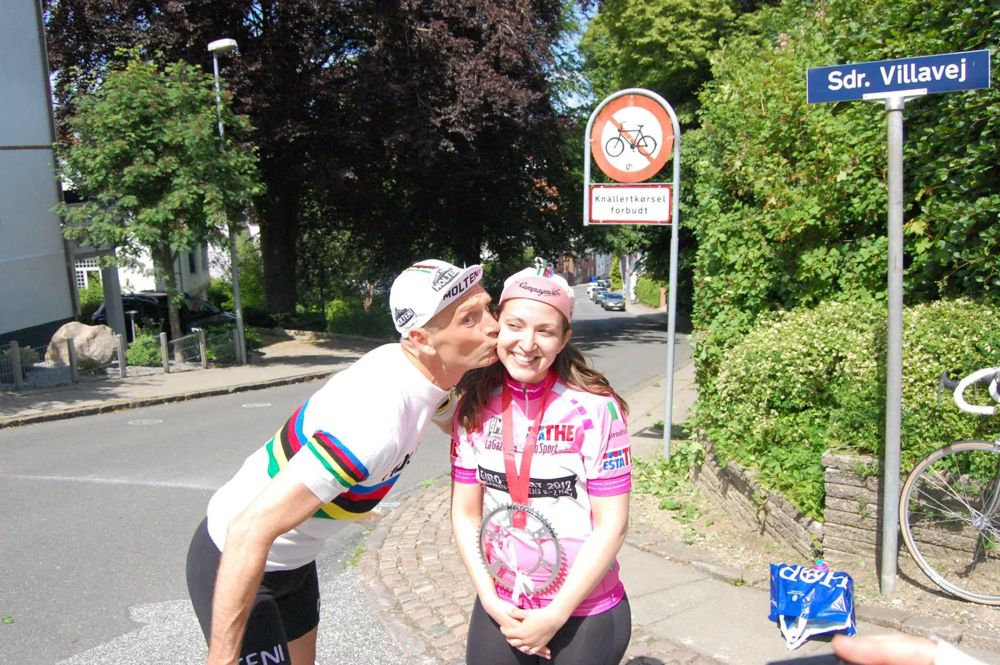

Molteni bibeholder kyssepiger

Mens Tour de France og Vuelta a España kysser kyssepigerne farvel – fortsætter Squadra Molteni med at kysse.
I årtier er cykelryttere blevet hyldet på podiet med kys fra piger efter en sejr. Men nu er det slut med spanske og franske kys. Ledelsen bag verdens største etapeløb, Tour de France, vil nemlig gå i fodsporene på blandt andet Vuelta a España. Det spanske løb besluttede sidste år at sløjfe kyssepiger som det første Grand Tour-løb.
Det danske retrocykelhold Squadra Molteni, der også står bag cykelløbene Molteni Sprinten, Trofeo Molteni og La Fleche Vejllonne, lader sig dog ikke påvirke af de franske og spanske løb.
– Vi elsker kyssepiger. Og de elsker os. Så selvfølgelig har vi kyssepiger med til vores løb, siger Kaptajn Bjørnsteen fra Squadra Moltenis HQ.
Cykelløb verden over er ofte blevet beskyldt for at være sexistiske i udtrykket på grund af kyssepigerne. Kritikken er derfor flere gange blusset op, ikke mindst i forbindelse med situationer, hvor pigerne er blevet genstand for kontroverser, så som da Peter Sagan i 2013 klemte en kyssepige på numsen.


– Nu har jeg jo selv været kyssefyr i forbindelse med Molteni Sprinten. Her havde jeg bestemt intet i mod, at vinderen i kvindeklassen klemte mig lidt i numsen. Jeg nød det rent faktisk, afslører Bjørnsteen.
– Men nuvel, kyssepiger (og fyre) er ansat til at kysse – og det skal selvfølgelig respekteres.
Squadra Molteni afholder La Fleche Vejllonne den 21. april. Molteni Sprinten og Trofeo Molteni er endnu ikke datosat. Der er dog allerede ansat kyssepiger – og fyre.